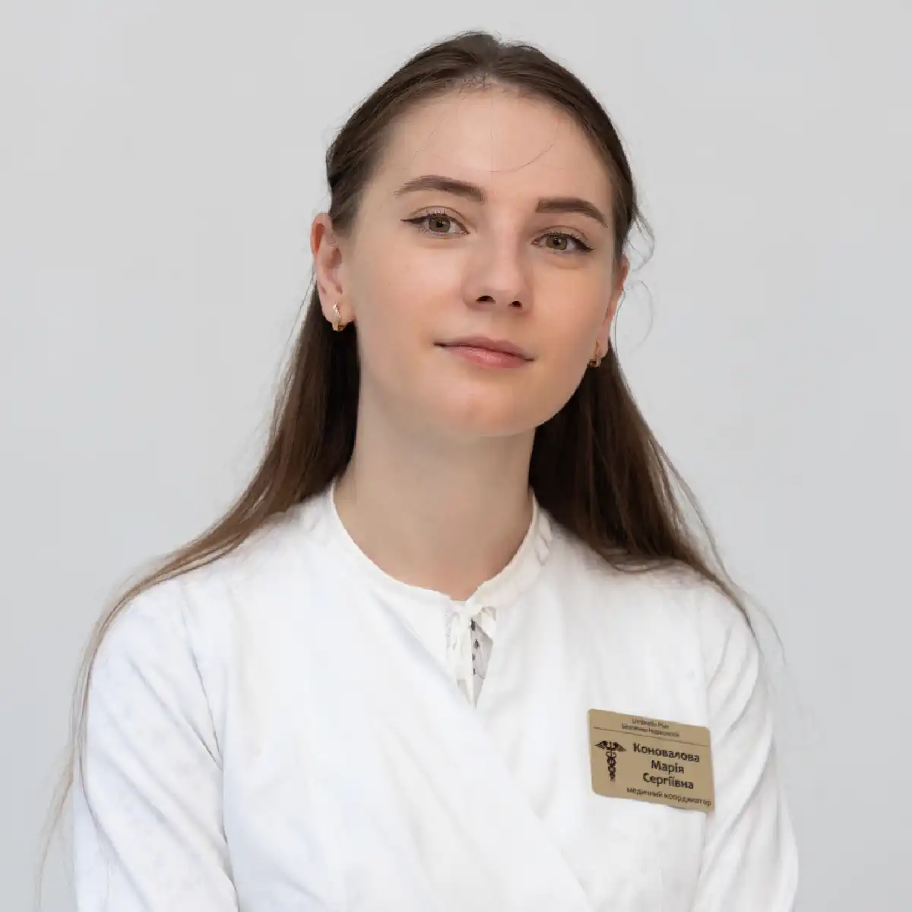

+38(068) 79 72 782
+38(068) 79 72 782Крапельниця від отруєння Одеса
Швидке відновлення та полегшення стану


Безкоштовна консультація, працюємо цілодобово 24/7
Швидке відновлення та полегшення стану

Крапельниця від отруєння в місті Одеса — це ефективний і безпечний спосіб швидко усунути симптоми інтоксикації та відновити нормальну роботу організму. Харчові, алкогольні та медикаментозні отруєння супроводжуються зневодненням, порушенням обмінних процесів, погіршенням роботи внутрішніх органів і загальним ослабленням стану, тому своєчасна медична допомога відіграє ключову роль.
Інфузійна терапія дозволяє в короткі терміни знизити рівень токсинів у крові, відновити водно-сольовий баланс і нормалізувати життєво важливі функції організму. Завдяки правильно підібраним розчинам і препаратам поліпшується робота печінки, нирок, серцево-судинної та нервової системи. Вже в процесі проведення крапельниці більшість пацієнтів відзначають полегшення: зменшується нудота, минає слабкість, нормалізується тиск, поліпшується загальне самопочуття. Такий підхід дозволяє не тільки зняти гострі симптоми отруєння, а й прискорити відновлення організму, запобігаючи розвитку можливих ускладнень.
Харчове отруєння може проявлятися по-різному, залежно від причини, виду токсину та ступеня інтоксикації організму. У більшості випадків симптоми розвиваються досить швидко — від кількох годин до доби після вживання неякісної їжі або заражених продуктів. Найбільш поширеними проявами є нудота і блювання, які виступають як захисна реакція організму на потрапляння токсинів. Часто до них приєднується діарея, що супроводжується частими позивами та втратою рідини. Також виникають болі та спазми в животі, які можуть бути як помірними, так і досить вираженими.
Нерідко спостерігається підвищення температури тіла, що свідчить про реакцію імунної системи на інфекцію або токсичний вплив. Загальний стан пацієнта погіршується: з’являється слабкість, запаморочення, зниження працездатності. При вираженій інтоксикації швидко розвивається зневоднення, особливо при частому блюванні та діареї, що може становити серйозну небезпеку для здоров’я. При появі подібних симптомів важливо не відкладати допомогу. Своєчасне звернення до лікаря дозволяє швидше стабілізувати стан, уникнути ускладнень і за необхідності провести детоксикацію організму.
У ряді випадків стан пацієнта при отруєнні може стрімко погіршуватися і потребувати негайного втручання лікаря. Термінова детоксикація необхідна при наступних симптомах:
Такі симптоми можуть свідчити про важку інтоксикацію і потребують професійного лікування. Своєчасне звернення до лікаря дозволяє швидко стабілізувати стан, провести детоксикацію і запобігти розвитку небезпечних ускладнень.
Склад крапельниці від отруєння підбирається суворо індивідуально, з урахуванням причини інтоксикації, вираженості симптомів, віку пацієнта та наявності супутніх захворювань. Такий підхід дозволяє впливати не тільки на симптоми, а й на основну причину погіршення стану. В інфузійну терапію можуть входити:
За необхідності лікар може додатково включити препарати для нормалізації тиску, поліпшення роботи серцево-судинної системи та відновлення нервової системи. Це особливо важливо при вираженій інтоксикації або тривалому погіршенні стану. Комплексний вплив інфузійної терапії дозволяє швидко поліпшити самопочуття пацієнта, усунути симптоми отруєння та прискорити відновлення організму, знижуючи ризик розвитку ускладнень. Після проведення процедури лікар обов’язково дає рекомендації щодо подальшого лікування, відновлення організму, харчування та режиму, а також пояснює, які заходи допоможуть уникнути повторного погіршення стану.
Вартість крапельниці від отруєння в Одесі починається від 2199 грн.
| Популярні послуги | Ціна |
|---|---|
| Нарколог Одеса | Від 2199 грн |
| Крапельниця від алкоголю | Від 2199 грн |
| Виведення із запою вдома | Від 2199 грн |
| Кодування від алкоголізму | Від 6000 грн |
Крапельниця від отруєння на дому — це зручний і ефективний спосіб лікування інтоксикації без необхідності госпіталізації. Лікар приїжджає до пацієнта в найкоротші терміни, проводить огляд, оцінює стан і відразу починає лікування, що дозволяє швидко стабілізувати самопочуття. Переваги лікування отруєння на дому:
Додатково лікар контролює стан пацієнта протягом усієї процедури, відстежує життєво важливі показники та за необхідності коригує лікування. Після завершення крапельниці фахівець дає рекомендації щодо подальшого відновлення. Такий формат особливо важливий при слабкості, блюванні, запамороченні та загальному важкому стані, коли самостійне пересування ускладнене і потрібна термінова медична допомога.
Крапельниця від отруєння проводиться під постійним контролем лікаря, що забезпечує високий рівень безпеки та ефективності лікування. Протягом усієї процедури фахівець уважно стежить за станом пацієнта, оцінює динаміку самопочуття та своєчасно реагує на будь-які зміни.
Під час інфузійної терапії контролюються артеріальний тиск, пульс, частота дихання та загальний стан пацієнта. Це дозволяє вчасно виявити можливі відхилення та запобігти розвитку ускладнень. Такий медичний контроль особливо важливий при вираженій інтоксикації, коли організм ослаблений і потребує підвищеної уваги. За необхідності лікар оперативно коригує склад розчинів, дозування препаратів і швидкість введення крапельниці. Індивідуальний підхід до лікування дозволяє зробити терапію максимально безпечною, комфортною та ефективною, забезпечуючи швидке поліпшення стану пацієнта.
Крапельниця від отруєння в середньому триває близько 1,5 години, проте точний час процедури залежить від ступеня інтоксикації, стану пацієнта та обраної схеми лікування. Лікар визначає оптимальну тривалість інфузійної терапії після огляду пацієнта, щоб забезпечити максимально безпечне та ефективне лікування.
У процесі проведення крапельниці фахівець контролює стан пацієнта, відстежує життєво важливі показники та за необхідності коригує швидкість введення препаратів і склад розчинів. Такий підхід дозволяє адаптувати лікування в реальному часі та домогтися найкращого результату. У більш важких випадках може знадобитися збільшення часу процедури або проведення повторних інфузій, щоб повністю усунути наслідки інтоксикації та відновити нормальну роботу організму. Після завершення лікування лікар оцінює стан пацієнта і дає рекомендації щодо подальшого відновлення, харчування та режиму, що допомагає прискорити реабілітацію та запобігти повторному погіршенню стану.
Незважаючи на високу ефективність лікування на дому, у ряді випадків потрібна госпіталізація, оскільки стан пацієнта може становити серйозну загрозу для здоров’я і життя. Домашня терапія підходить не у всіх ситуаціях, особливо якщо інтоксикація виражена або супроводжується ускладненнями. У таких випадках важливо не відкладати переведення пацієнта в стаціонар, де доступні розширені можливості діагностики та лікування. Госпіталізація необхідна при:
Додатково показанням до госпіталізації можуть бути виражене зневоднення, яке неможливо компенсувати в домашніх умовах, нестабільний артеріальний тиск, виражені порушення дихання, перебої в роботі серця, а також тривале блювання та діарея, що призводять до виснаження організму. В умовах стаціонару пацієнт отримує цілодобове медичне спостереження, що особливо важливо при нестабільному стані. Проводиться розширена діагностика, включаючи лабораторні аналізи та інструментальні дослідження, що дозволяє точно визначити причину інтоксикації та ступінь ураження організму. За необхідності призначається інтенсивна терапія з використанням ширшого спектру препаратів і методів лікування.
При легких формах отруєння можуть використовуватися сорбенти (сорбекс, активоване вугілля), препарати для відновлення водно-сольового балансу (регідрон) і засоби від нудоти (ондасетрон, метоклопрамід). Ці засоби допомагають знизити вираженість симптомів, частково вивести токсини та підтримати організм на початковому етапі відновлення.
Сорбенти сприяють зв’язуванню та виведенню шкідливих речовин зі шлунково-кишкового тракту, а розчини для регідратації допомагають заповнити втрату рідини та електролітів, яка виникає при блюванні та діареї. Протиблювотні препарати можуть полегшити стан, зменшити нудоту і запобігти подальшому зневодненню.
Однак важливо розуміти, що самолікування не завжди ефективне і безпечне, особливо якщо симптоми виражені або тривають тривалий час. Неправильно підібрані препарати можуть не дати потрібного ефекту або навіть погіршити стан. При погіршенні самопочуття, посиленні симптомів або відсутності покращень необхідно якомога швидше звернутися до лікаря. Своєчасна медична допомога дозволяє провести повноцінну детоксикацію, уникнути ускладнень і швидше відновити здоров’я.
В екстрених ситуаціях у місті Одеса важливо діяти швидко. Терміновий виклик лікаря додому дозволяє оперативно оцінити стан пацієнта, почати лікування і запобігти розвитку ускладнень. UmbrellaPlus надає цілодобову медичну допомогу на дому. Досвідчені фахівці виїжджають у найкоротші терміни, проводять детоксикацію, контролюють стан пацієнта і забезпечують безпечне лікування на всіх етапах. Своєчасне звернення дозволяє уникнути ускладнень і значно прискорює відновлення організму.
Телефон для консультації та виклику лікаря: +38(050-021-69-57)

Так, ми суворо дотримуємося повної конфіденційності на всіх етапах лікування. Інформація про пацієнта, діагноз та проходження терапії не передається третім особам. Звернення до нас не тягне за собою постановку на облік. Ви можете бути впевнені у безпеці та анонімності.
Програма лікування розробляється індивідуально після консультації з фахівцем. Враховуються вид залежності, її тривалість, фізичний та психологічний стан пацієнта. Такий підхід дозволяє підвищити ефективність терапії та знизити ризик зриву. Ми не використовуємо шаблонні рішення.
Так, ми супроводжуємо пацієнтів і після основного курсу лікування. Проводяться консультації, рекомендації щодо адаптації та профілактики рецидивів. За потреби можлива подальша психологічна підтримка. Це допомагає зберегти результат та повернутися до повноцінного життя.
Анастасия Шевченко

Прокапали витаминную капельницу, все прошло очень хорошо
Анонимно
Через 3 дня заметила очень сильные улучшения. Как в плане настроения, так и на коже.
Владимир
Друзья посоветовали прокапатся после тренировки, боли в мышцах почти не было + восстановление проходило намного быстрее
Номер телефону:
+380 (68) 797 27 82
+380 (50) 021 69 57
Адресу наркологічного центра вашого міста уточнюйте за
телефоном
Працюємо: Київ, Одеса, Львів, Харків, Дніпро, Запоріжжя,
Черкасах, Чугуєві, Чорноморську, Кам'янському
Telegram: t.me/umbrellaplus
Графік работы: Цілодобово